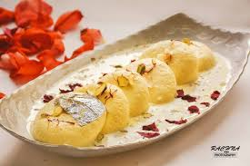

1. First, boil fresh full cream milk in a large vessel and stir continuously to avoid burning at the bottom. Once the milk starts boiling, add lemon juice or vinegar slowly while stirring gently. The milk will begin to curdle and separate into paneer and water. Turn off the flame and strain the mixture using a clean cloth. Wash the paneer with cold water to remove the sour taste completely. Squeeze the excess water and hang it for some time so soft chenna is formed for rasmalai preparation.
2. Take the prepared chenna on a plate and knead it gently using your palms until it becomes smooth, soft, and slightly shiny. Proper kneading is very important because it helps rasmalai become soft and spongy after cooking. Do not over-knead the dough because it may become hard. Once the texture becomes smooth, divide the dough into small equal portions and shape them into flat round discs carefully without cracks.
3. In another deep pan, prepare sugar syrup by boiling water and sugar together. Stir continuously until the sugar dissolves completely and the syrup starts boiling properly. Add the prepared rasmalai discs slowly into the syrup and cover the pan with a lid. Let them cook on medium flame because the discs will expand in size and become soft and fluffy while absorbing sweetness from the syrup.
4. While the rasmalai discs are cooking, prepare the flavored milk separately. Boil full cream milk in a wide pan and reduce it slowly by stirring continuously. Add sugar, cardamom powder, saffron strands, and chopped dry fruits like almonds and pistachios. Continue boiling until the milk becomes slightly thick, rich, creamy, and aromatic. This flavored milk gives rasmalai its delicious royal taste.
5. Once the rasmalai discs are cooked completely and become soft, remove them carefully from the sugar syrup. Press them gently between your palms to remove excess syrup without breaking their shape. This step helps the discs absorb the flavored milk properly and makes the dessert rich and juicy.
6. Now place the soft rasmalai discs into the prepared thick flavored milk. Let them soak for some time so the sweetness and rich flavors spread evenly inside the rasmalai. The saffron, cardamom, and dry fruits enhance both taste and aroma, making the dessert more special and festive.
7. Refrigerate the rasmalai for a few hours before serving because chilled rasmalai tastes more refreshing and delicious. The soft paneer discs become extra juicy after soaking in the creamy milk for a long time. Garnish with extra pistachios, almonds, and saffron strands for a rich and attractive appearance.
8. Finally, serve the special rasmalai chilled during festivals, celebrations, family gatherings, or special occasions. Its soft texture, creamy milk flavor, and rich sweetness make rasmalai one of the most loved traditional Indian desserts enjoyed by people of all ages.
